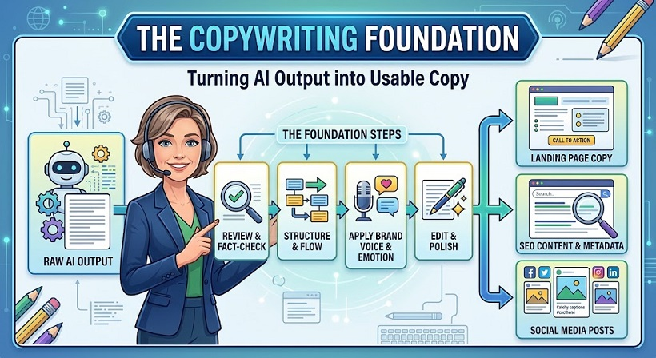

هندسة الإقناع
الدليل الشامل للكوبي رايتينج للمقاولين والتقنيين
إليك مسودة الكتاب مهيكلة ومصاغة بأسلوب احترافي. تم ترتيب الأفكار ووضع العناوين الرئيسية والفرعية وتوسيع الشروحات مع دمج أمثلة تقنية في التبريد والتكييف والتجارة الإلكترونية لتكون مرجعاً عملياً عالي القيمة.
مقدمة الكتاب: الكلمات التي تدفع الناس للتحرك
تخيل شركتين تقدمان نفس الخدمة التقنية وبنفس السعر. الأولى تحقق نسبة تحويل ومبيعات لا تتجاوز 2%، بينما الثانية تحقق 8%. الفرق هنا ليس في جودة المنتج، ولا في براعة التصميم، ولا حتى في الميزانية الإعلانية. الفرق يكمن في الكوبي رايتينج (Copywriting).
إن الكوبي رايتينج ليس مجرد «كتابة محتوى» (Content Writing) تهدف إلى الإخبار أو التعليم. إنه كتابة تخدم هدفاً تجارياً؛ فهو يقنع ويروج ويوجه القارئ لاتخاذ إجراء محدد، مثل الشراء أو الاشتراك أو حجز خدمة. ومع دخول الذكاء الاصطناعي، لم يعد التحدي في سرعة الكتابة، بل في التوجيه الاستراتيجي لإنتاج نصوص تبيع حقاً بدلاً من النصوص العامة والمملة.
الفصل الأول: التأسيس الاستراتيجي — اعرف قبل أن تكتب
أكبر خطأ يقع فيه كاتب المحتوى أو المقاول هو البدء في الكتابة قبل تحديد بوصلة العمل. النص الذي يصلح لكل الناس لا يقنع أحداً. قبل كتابة أي مسودة، يجب أن تبني مثلث الرسالة (The Message Triangle).
- العرض (The Offer): ماذا تبيع ولمن؟ العرض ليس مجرد منتج، بل حل لمشكلة. بدلاً من «نحن نبيع مكيفات هواء»، قل: «أنظمة تبريد ذكية للمقاهي والفنادق تخفض فاتورة الكهرباء بنسبة 30%».
- النتيجة (The Outcome): ما الأثر الملموس؟ العميل لا يشتري المنتج، بل يشتري الراحة والنسخة الأفضل من نفسه، مثل: «تبريد غرفتك في 5 دقائق وسط حرارة الصيف الشديدة».
- الإثبات (The Proof): لماذا يجب أن يثق بك؟ استخدم الإثبات الاجتماعي، وشرح العملية التقنية، والأرقام الدقيقة، والشهادات والخبرات.
الفصل الثاني: المحركات النفسية للإقناع
- نفور الخسارة (Loss Aversion): الألم الناتج عن الخسارة أقوى نفسياً من الفرح بالربح. أظهر ما يخسره العميل الآن: «كل شهر تؤجل فيه صيانة أجهزتك، أنت تحرق 1500 درهم إضافية في فاتورة الكهرباء».
- الاستعجال والندرة (Urgency & Scarcity): حدد وقتاً أو عدداً حقيقياً، مثل: «تبقت 5 مقاعد فقط في الدورة التقنية». لا تستخدم ندرة وهمية.
- التوافق مع مرحلة الوعي: الجمهور البارد يحتاج دليلاً مجانياً، والجمهور الدافئ يحتاج تجربة أو دراسة مجانية، أما الجمهور الساخن فيمكن دعوته إلى شراء النسخة الآن.
الفصل الثالث: هيكل الإقناع الكلاسيكي AIDA
- الانتباه (Attention): اكسر الجمود في أول ثانيتين: «هل تعطل نظام التبريد لديك في ذروة حرارة الصيف؟»
- الاهتمام (Interest): اربط المشكلة بالواقع: «الغبار المتراكم يرفع استهلاك أجهزتك بنسبة 30%؛ هنا يأتي دور الصيانة الوقائية».
- الرغبة (Desire): ارسم صورة للمستقبل: «تخيل نوماً هادئاً وفاتورة كهرباء منخفضة وأجهزة تعمل بكفاءة حتى في درجة حرارة 48 مئوية».
- الفعل (Action): قدم دعوة واضحة: «أرسل صورة بطاقة مكيفك عبر واتساب الآن، وسأخبرك بنوع الغاز المناسب وتكلفة الصيانة في أقل من 5 دقائق».
الفصل الرابع: خوارزمية التحرير وبروتوكول الفحص
كتابة المسودة الأولى، حتى باستخدام الذكاء الاصطناعي، هي مجرد بداية. الاحتراف يكمن في التحرير الاستراتيجي باستخدام قاعدة الرافعة الواحدة (One Lever Per Pass): لا تعدّل كل شيء دفعة واحدة.
- الوضوح (Clarity): اختبر كل جملة بسؤال «وماذا بعد؟» واحذف الكلمات الرنانة الفارغة مثل مبتكر ورائد وممتاز إذا لم تدعمها نتيجة حقيقية.
- المبني للمعلوم (Active Voice): لا تقل «يتم توفير الطاقة بواسطة أجهزتنا»، بل قل «أجهزتنا توفر لك 30% من الطاقة».
- التحديد (Specificity): إذا كان النص غير مقنع فأضف أرقاماً وأدلة ووعوداً زمنية دقيقة.
- التشخيص الدقيق: إذا كان النص مملاً فأصلح الخطاف، وإذا كان غير مقنع فأضف الأرقام والأدلة.
الفصل الخامس: العناوين ومحركات البحث SEO
العنوان الجيد يخدم القارئ البشري ومحرك البحث Google والمساحة المتاحة. يجب أن يتطابق العنوان مع نية الباحث:
- نية معلوماتية: «كيف تقلل استهلاك المكيف للكهرباء في الصيف؟»
- نية تجارية: «أفضل 5 أجهزة تبريد للمقاهي والمطاعم: مقارنة شاملة».
- نية شرائية: «أسعار وخطط تركيب أجهزة Inverter في الرشيدية 2026».
في B2C ركز على الراحة والسهولة: «احصل على نوم هادئ وصيف بارد». وفي B2B ركز على العائد على الاستثمار (ROI) وتقليل المخاطر: «5 حلول صيانة وقائية تقلل توقف غرف التبريد بنسبة 25% وتحمي مخزونك من التلف».
الفصل السادس: من كاتب محتوى إلى مهندس تحويل
الكوبي رايتينج ليس سحراً، بل هو هندسة. عندما تجمع بين الفهم العميق لجمهورك، والعرض الواضح المدعوم بالأدلة، والاستخدام الذكي لأدوات الذكاء الاصطناعي، فإنك لا تكتب مجرد كلمات، بل تبني أنظمة إقناع تعمل لصالحك على مدار الساعة.
ابدأ اليوم بتطبيق قاعدة «الرافعة الواحدة» على أول منتج أو خدمة تقدمها، ولاحظ كيف تتغير النتائج عندما تنتقل من الكتابة العشوائية إلى التصميم الاستراتيجي.
الشراء والتواصل
إذا كنت ترغب في شراء الدروس كاملة، اتصل عبر الواتساب.